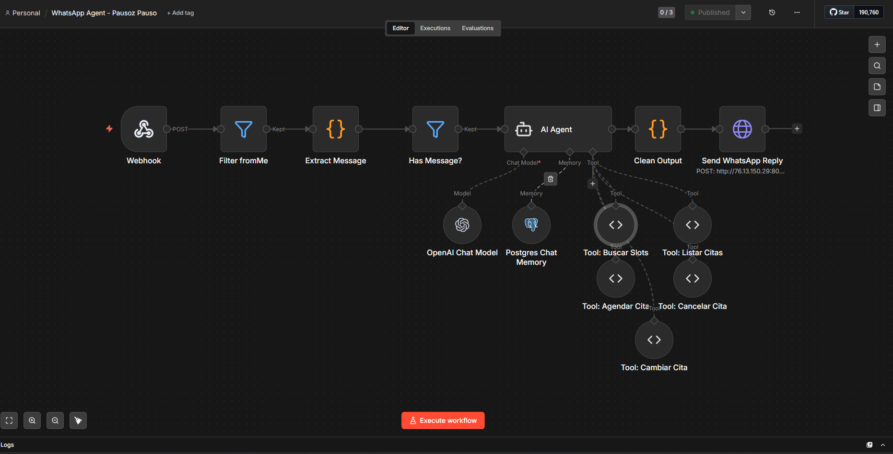
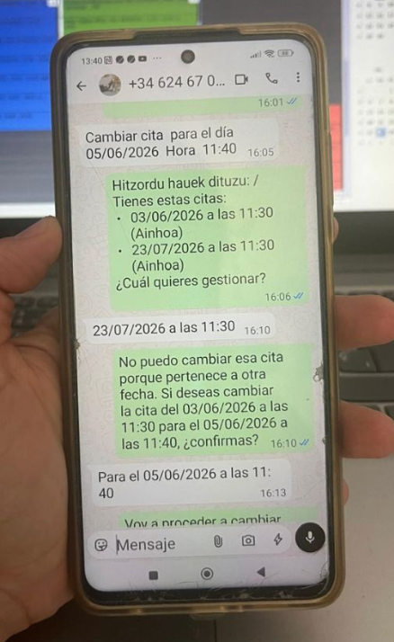
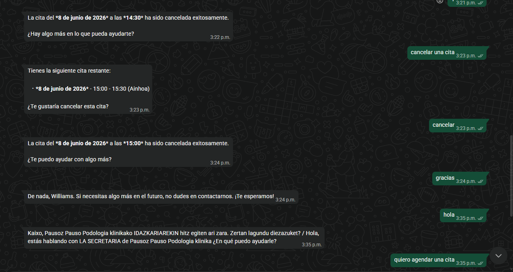
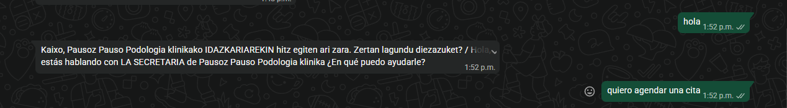
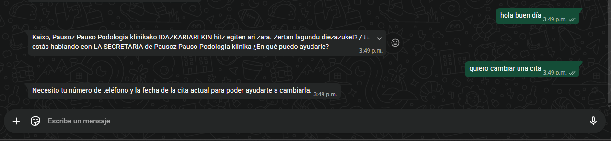

Chatbot WhatsApp Pausoz Pauso
Chatbot creado con flujos de n8n que utiliza un agente basado en GPT-4o-mini de OpenAI y se comunica con WhatsApp mediante Evolution API, desplegado en un VPS. El bot gestiona el calendario de citas de la clínica de podología en Vizcaya, España, usando como fuente el software de gestión mnprogram.net, mediante un RPA que expone endpoints controlados por el agente como herramientas.
Algunas capturas de pantalla del sistema




